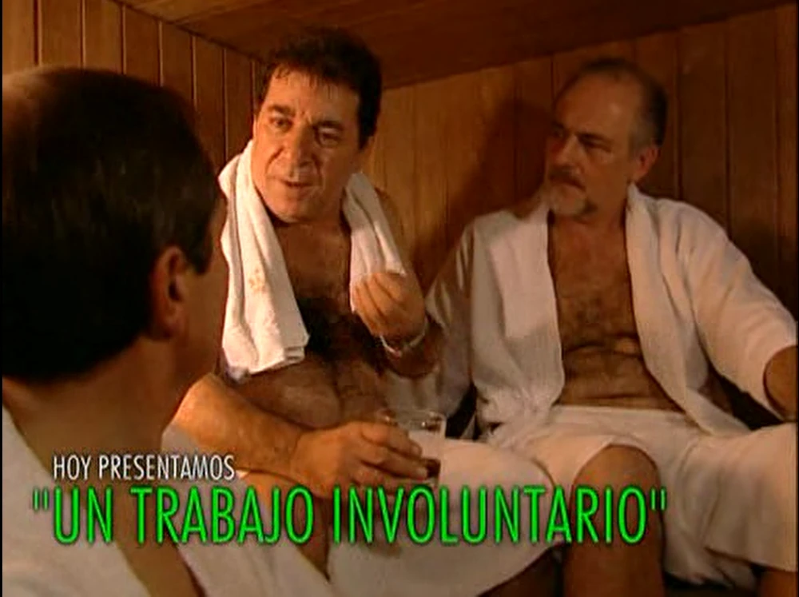
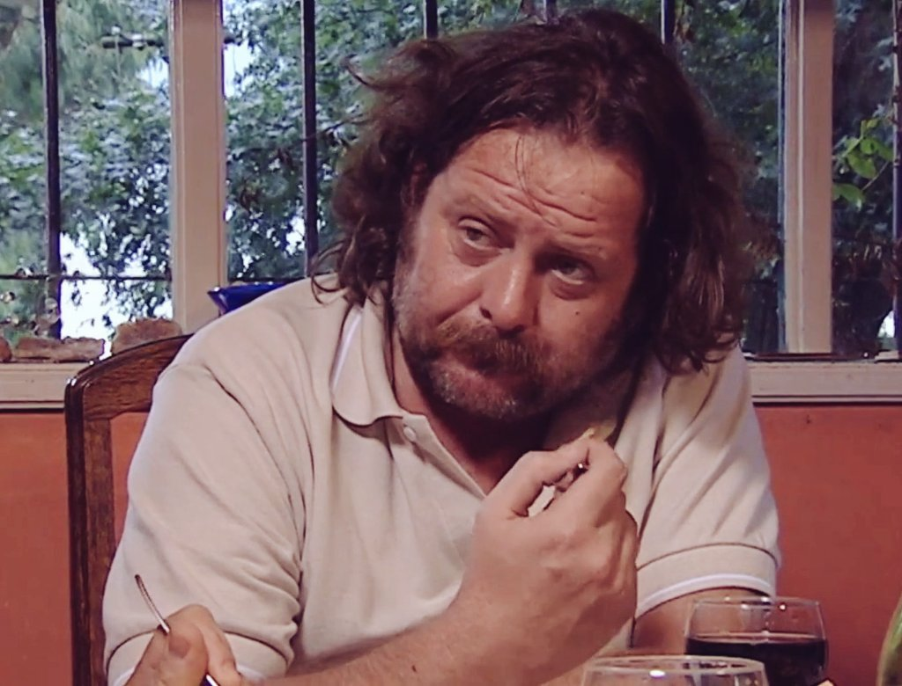
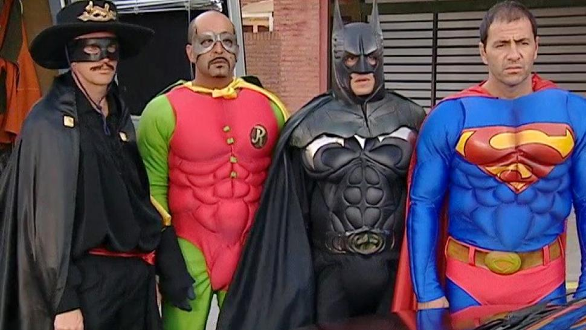
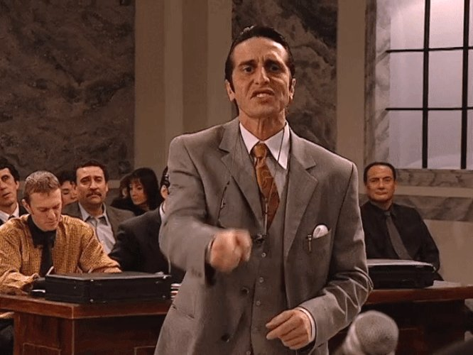

Episodios
Una pareja está a punto de divorciarse, pero el hombre de la pareja, Bernardo Galván (Claudio Rissi), no está en absoluto de acuerdo con ello, ya que pese a las diferencias y entredichos, está muy apegado a su mujer, Claudia (Carola Reyna). Galván está al borde del colapso hasta que su vecina le recomienda "un grupo de personas" que resuelve problemas cotidianos, Los simuladores. Este operativo consiste en hacer una investigación exhaustiva sobre Claudia y sus necesidades, para convertir a Galván en su hombre ideal.
Martín Vanegas (Pasta Dioguardi), es el propietario de un locutorio que le debe dinero a Fernando Laguzzi (Manuel Vicente), un usurero despiadado que amenaza, por medio de sus matones (Roly Serrano, Alfredo Allende), con matar a sus hijos si no le salda la deuda antes de determinada fecha. Laguzzi posee un tipo de sangre muy especial, difícil de encontrar. A partir de ese dato, Los simuladores le harán creer que tiene una obstrucción intestinal que se soluciona con una operación simple, pero que se ve complicada al extremo por requerir su particular sangre, y que el único donante compatible es Vanegas.
El Dr. Lempergier (Rolo Puente), es un abogado mafioso que lleva adelante la representación de Bruno Sontag (Tony Vilas), un exfuncionario del Ministerio de Salud que terminó en la cárcel a raíz de su responsabilidad por la compra de comida en mal estado para su posterior repartición en comedores y hospitales públicos. A pesar de la negativa de Santos, Lempergier lo secuestra y utiliza como rehén a cambio de contar con los servicios de Los Simuladores. El equipo pergeña un plan para sacar a Sontag de la cárcel y engañar al director del penal (Pachi Armas), con el pretexto de juzgarlo en Italia. Pero lo que resultó un exitoso plan de fuga, termina siendo una trampa para ambos criminales, quienes son detenidos en la entrada de un aeropuerto estadounidense, por portar documentaciones con las fotos de Adolf Hitler y Osama Bin Laden. Con la participación de Santiago Ríos.
Beatriz Ledesma (Mónica Villa) es una maestra de escuela primaria que vive en la localidad de Oberá, Misiones, y que es sometida constantemente a situaciones de violencia de género por parte de su marido, Carlos Lorenzo (Luis Luque) un empresario textil con vínculos con las fuerzas de seguridad, debido a que son clientes de su firma. Beatriz contrata a los Simuladores, quienes aprovechan la particularidad de que Carlos es sietemesino para elaborar un plan a su alrededor para alejarlo de ella.
Pablo Herdel (Luciano Acosta), es un niño de 12 años que sufre de bullying y violencia física en su escuela, al punto tal de pretender desistir de realizar el viaje de egresados. Su sitación es alertada por Rubín (Pablo Iemma), el joven kiosquero de la escuela, quien contacta a Los Simuladores. Ellos basan su plan en las habilidades creativas de Pablo, a la vez de llevar a cabo situaciones que le permiten levantar su autoestima. La solución de este caso también trajo aparejada la solución del caso corto, ya que aquí se realizó el evento en el que se recuperó el dinero perdido de Perillo, el cual fue reinvertido en una pequeña editorial de cómics, al frente de la cual fue puesto el propio Perillo (Con las participaciones estelares de Ricardo Morán como el director de la escuela y de Fernando Lúpiz como él mismo).
Mariana Ventura (Marcela Kloosterboer), es una joven estudiante del Profesorado de Historia de la Universidad de Buenos Aires, que al mismo tiempo anhela ser una top model. Sin embargo, Mariana debe lidiar con sus problemas de bulimia para cumplir con los estándares impuestos por la agencia manejada por Manuel Garriga (Jean-Pierre Noher), para la cual trabaja. Su hermano, Diego Ventura (Nicolás D'Agostino) ve con preocupación la situación de su hermana, por lo que solicita ayuda a Los Simuladores en busca de una solución. El operativo llevado a cabo, consiste en llevar a Garriga ante una falsa Corte Internacional de Precrímenes contra la Humanidad de la ONU, acusándolo "debilitador social", con el fin de hacer cambiar su visión sobre los cánones de belleza y tratar de provocar un cambio en los hábitos alimenticios de Mariana. (Con las participaciones estelares de Silvina Bosco, Pablo Novak y Pablo De Nito).